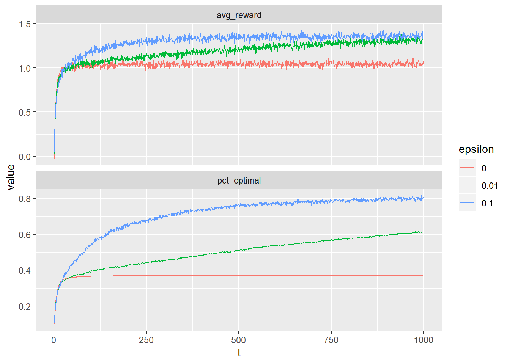
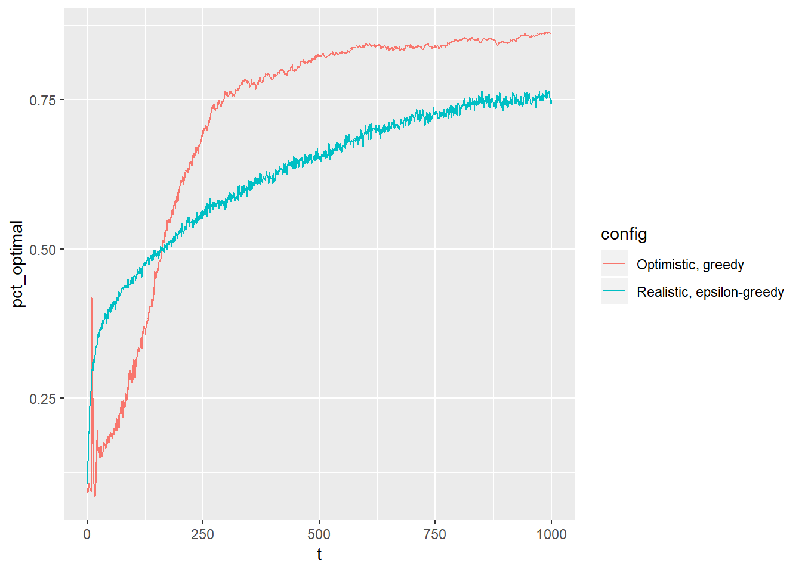
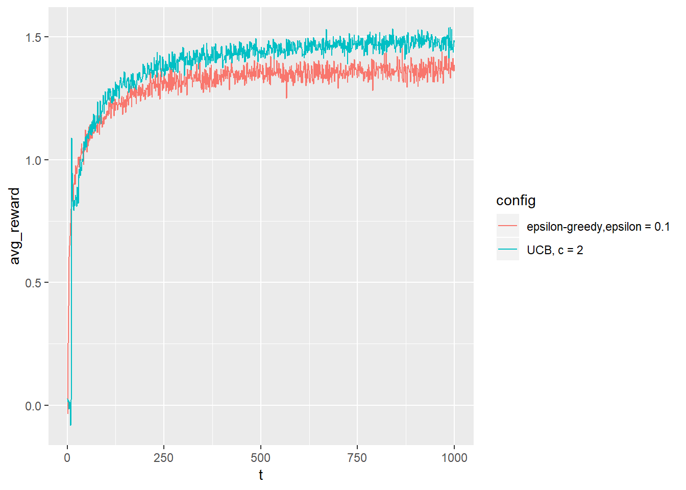
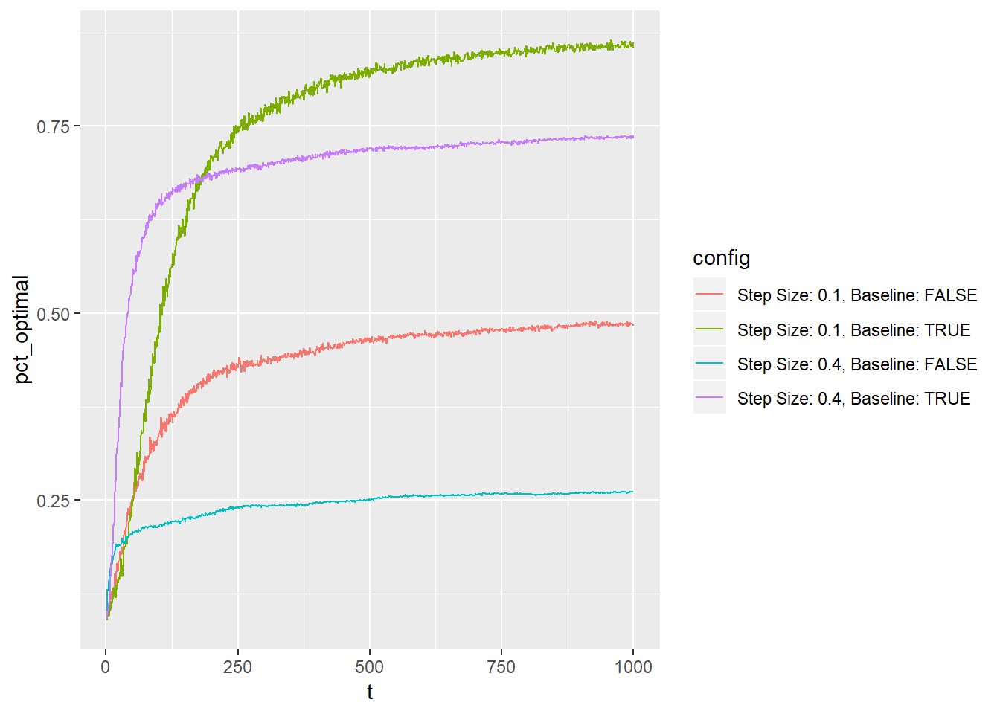
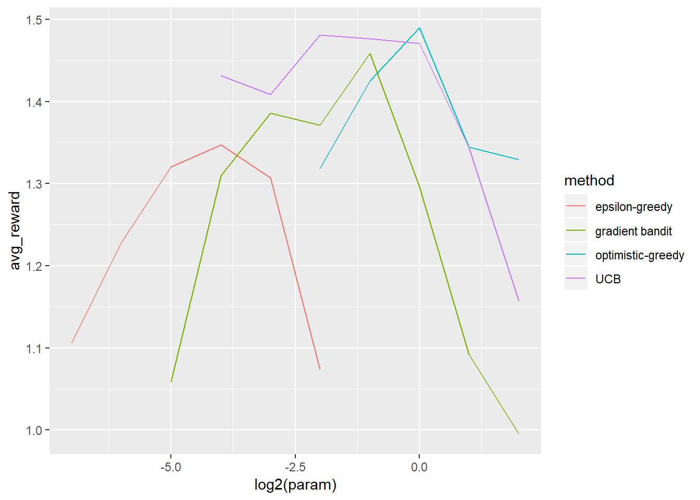

Chapter 2 Multi-armed Bandit
library(tidyverse)2.1 Example: The 10-armed Testbed
Python code exists here with the following copyright statement.
#######################################################################
# Copyright (C) #
# 2016-2018 Shangtong Zhang(zhangshangtong.cpp@gmail.com) #
# 2016 Tian Jun(tianjun.cpp@gmail.com) #
# 2016 Artem Oboturov(oboturov@gmail.com) #
# 2016 Kenta Shimada(hyperkentakun@gmail.com) #
# Permission given to modify the code as long as you keep this #
# declaration at the top #
#######################################################################library(R6)Bandit <- R6Class("Bandit", list(
# @k_arm: # of arms
# @epsilon: probability for exploration in epsilon-greedy algorithm
# @initial: initial estimation for each action
# @step_size: constant step size for updating estimations
# @sample_averages: if True, use sample averages to update estimations instead of constant step size
# @UCB_param: if not None, use UCB algorithm to select action
# @gradient: if True, use gradient based bandit algorithm
# @gradient_baseline: if True, use average reward as baseline for gradient based bandit algorithm
k = NA_integer_,
step_size = NA_real_,
sample_averages = FALSE,
indices = NULL,
time = 0L,
UCB_param = NULL,
gradient = FALSE,
gradient_baseline = FALSE,
average_reward = 0,
true_reward = 0,
epsilon = NA_real_,
initial = NA_real_,
initialize = function (
k_arm = 10, epsilon = 0, initial = 0, step_size = 0.1,
sample_averages = FALSE, UCB_param = NULL,
gradient = FALSE, gradient_baseline = FALSE, true_reward = 0
) {
self$k <- k_arm
self$step_size <- step_size
self$sample_averages <- sample_averages
self$indices <- seq_len(self$k)
self$time <- 0L
self$UCB_param <- UCB_param
self$gradient <- gradient
self$gradient_baseline <- gradient_baseline
self$average_reward <- 0
self$true_reward <- true_reward
self$epsilon <- epsilon
self$initial <- initial
}
))Bandit$set("public", "q_true", NULL)
Bandit$set("public", "q_estimation", NULL)
Bandit$set("public", "action_count", NULL)
Bandit$set("public", "best_action", NULL)
Bandit$set("public", "action_prob", NULL)
Bandit$set("public", "reset", function() {
# set time to 0
self$time <- 0L
# real reward for each action
self$q_true <- rnorm(self$k) + self$true_reward
# estimation for each action
self$q_estimation <- rep(0, self$k) + self$initial
# # of chosen times for each action
self$action_count = rep(0L, self$k)
# action probability for gradient methods
self$action_prob <- rep(1/self$k, self$k)
self$best_action <- which.max(self$q_true)
})maxima <- function(x) {
ind <- which(x == max(x, na.rm = TRUE))
if (length(ind) > 1) {
ind <- sample(ind, 1)
}
invisible(ind)
}
# get an action for this bandit
Bandit$set("public", "act", function() {
if (runif(1) < self$epsilon) {
return(sample(self$indices, 1))
}
if (!is.null(self$UCB_param)) {
UCB_estimation <- self$q_estimation +
self$UCB_param * sqrt(log(self$time + 1) / (self$action_count + 1e-5))
return(maxima(UCB_estimation))
}
if (self$gradient) {
exp_est <- exp(self$q_estimation)
self$action_prob <- exp_est / sum(exp_est)
return(sample(self$indices, 1, prob = self$action_prob))
}
return(maxima(self$q_estimation))
})Bandit$set("public", "step", function(action) {
# generate the reward under N(real reward, 1)
reward <- rnorm(1, self$q_true[action], 1)
self$time <- self$time + 1
self$average_reward <- (self$time - 1.0) / self$time *
self$average_reward + reward / self$time
self$action_count[action] <- self$action_count[action] + 1
if (self$sample_averages) {
# update estimation using sample averages
self$q_estimation[action] <- self$q_estimation[action] +
1 / self$action_count[action] * (reward - self$q_estimation[action])
} else if (self$gradient) {
gradient <- - self$action_prob
gradient[action] <- gradient[action] + 1
baseline <- self$average_reward * self$gradient_baseline
self$q_estimation <- self$q_estimation +
self$step_size * (reward - baseline) * gradient
} else {
# update estimation with constant step size
self$q_estimation[action] <- self$q_estimation[action] +
self$step_size * (reward - self$q_estimation[action])
}
invisible(reward)
})simulate_bandit <- function(bandit, time) {
bandit$reset()
best_action <- vector("logical", length = time)
reward <- vector("numeric", length = time)
for(t in seq_len(time)) {
action <- bandit$act()
reward[t] <- bandit$step(action)
if (action == bandit$best_action) {
best_action[t] <- TRUE
}
}
res <- tibble(
t = seq_len(time),
best_action = best_action,
reward = reward
)
return(res)
}2.1.1 Figure 2-2
set.seed(2000)
epsilons <- c(0.00, 0.01, 0.10)
runs <- 2000
times <- 1000
bandits <- map(rep_along(seq_len(runs * length(epsilons)), epsilons),
~ Bandit$new(epsilon = .x, sample_averages = TRUE))
pb <- progress_estimated(length(bandits))
sim_results <- map_dfr(bandits, function(x) {
pb$tick()$print()
simulate_bandit(x, times) %>% mutate(epsilon = x$epsilon)
})sim_results %>%
mutate(epsilon = factor(epsilon, levels = epsilons)) %>%
group_by(epsilon, t) %>%
summarize(avg_reward = mean(reward),
pct_optimal = mean(best_action)) %>%
ungroup() %>%
gather(key = "key", value = "value",
avg_reward, pct_optimal) %>%
ggplot(aes(x = t, y = value)) +
geom_line(aes(color = epsilon)) +
facet_wrap(~ key, nrow = 2, scales = "free_y")
2.1.2 Figure 2-3
set.seed(2000)
epsilons <- c(0.00, 0.10)
initial <- c(5, 0)
runs <- 2000
times <- 1000
bandits <- map2(rep_along(seq_len(runs * length(epsilons)), epsilons),
rep_along(seq_len(runs * length(initial)), initial),
~ Bandit$new(epsilon = .x,
initial = .y,
step_size = 0.1))
pb <- progress_estimated(length(bandits))
sim_results <- map_dfr(bandits, function(x) {
pb$tick()$print()
simulate_bandit(x, times) %>% mutate(
epsilon = x$epsilon,
initial = x$initial)
})sim_results %>%
mutate(
config = if_else(
epsilon == 0,
"Optimistic, greedy",
"Realistic, epsilon-greedy")
) %>%
group_by(config, t) %>%
summarize(avg_reward = mean(reward),
pct_optimal = mean(best_action)) %>%
ungroup() %>%
ggplot(aes(x = t, y = pct_optimal)) +
geom_line(aes(color = config))
2.1.3 Figure 2-4
set.seed(2000)
bandits <- c(
Bandit$new(epsilon = 0, UCB_param = 2, sample_averages = TRUE),
Bandit$new(epsilon = 0.1, sample_averages = TRUE)
)
runs <- 2000
times <- 1000
bandits <- rep_along(seq_len(runs * length(bandits)), bandits)
pb <- progress_estimated(length(bandits))
sim_results <- map_dfr(bandits, function(x) {
pb$tick()$print()
simulate_bandit(x, times) %>% mutate(
epsilon = x$epsilon,
UCB_param = x$UCB_param)
})sim_results %>%
mutate(
config = if_else(
!is.na(UCB_param),
"UCB, c = 2",
"epsilon-greedy,epsilon = 0.1")
) %>%
group_by(config, t) %>%
summarize(avg_reward = mean(reward),
pct_optimal = mean(best_action)) %>%
ungroup() %>%
ggplot(aes(x = t, y = avg_reward)) +
geom_line(aes(color = config))
2.1.4 Figure 2-5
set.seed(2000)
bandits <- c(
Bandit$new(gradient = TRUE, step_size = 0.1,
gradient_baseline = TRUE, true_reward = 4),
Bandit$new(gradient = TRUE, step_size = 0.1,
gradient_baseline = FALSE, true_reward = 4),
Bandit$new(gradient = TRUE, step_size = 0.4,
gradient_baseline = TRUE, true_reward = 4),
Bandit$new(gradient = TRUE, step_size = 0.4,
gradient_baseline = FALSE, true_reward = 4)
)
runs <- 2000
times <- 1000
bandits <- rep_along(seq_len(runs * length(bandits)), bandits)
pb <- progress_estimated(length(bandits))
sim_results <- map_dfr(bandits, function(x) {
pb$tick()$print()
simulate_bandit(x, times) %>% mutate(
step_size = x$step_size,
baseline = x$gradient_baseline)
})sim_results %>%
mutate(
config = str_glue("Step Size: {step_size}, Baseline: {baseline}")
) %>%
group_by(config, t) %>%
summarize(avg_reward = mean(reward),
pct_optimal = mean(best_action)) %>%
ungroup() %>%
ggplot(aes(x = t, y = pct_optimal)) +
geom_line(aes(color = config))
2.1.5 Figure 2-6
set.seed(2000)
bandits <- c(
# epsilon-greedy w/ sample average
Bandit$new(epsilon = 1/128, sample_averages = TRUE),
Bandit$new(epsilon = 1/64, sample_averages = TRUE),
Bandit$new(epsilon = 1/32, sample_averages = TRUE),
Bandit$new(epsilon = 1/16, sample_averages = TRUE),
Bandit$new(epsilon = 1/8, sample_averages = TRUE),
Bandit$new(epsilon = 1/4, sample_averages = TRUE),
# gradient bandit
Bandit$new(gradient = TRUE, step_size = 1/32, gradient_baseline = TRUE),
Bandit$new(gradient = TRUE, step_size = 1/16, gradient_baseline = TRUE),
Bandit$new(gradient = TRUE, step_size = 1/8, gradient_baseline = TRUE),
Bandit$new(gradient = TRUE, step_size = 1/4, gradient_baseline = TRUE),
Bandit$new(gradient = TRUE, step_size = 1/2, gradient_baseline = TRUE),
Bandit$new(gradient = TRUE, step_size = 1, gradient_baseline = TRUE),
Bandit$new(gradient = TRUE, step_size = 2, gradient_baseline = TRUE),
Bandit$new(gradient = TRUE, step_size = 4, gradient_baseline = TRUE),
# UCB
Bandit$new(epsilon = 0, UCB_param = 1/16, sample_averages = TRUE),
Bandit$new(epsilon = 0, UCB_param = 1/8, sample_averages = TRUE),
Bandit$new(epsilon = 0, UCB_param = 1/4, sample_averages = TRUE),
Bandit$new(epsilon = 0, UCB_param = 1/2, sample_averages = TRUE),
Bandit$new(epsilon = 0, UCB_param = 1, sample_averages = TRUE),
Bandit$new(epsilon = 0, UCB_param = 2, sample_averages = TRUE),
Bandit$new(epsilon = 0, UCB_param = 4, sample_averages = TRUE),
# Optimistic greedy
Bandit$new(epsilon = 0, initial = 1/4, step_size = 0.1),
Bandit$new(epsilon = 0, initial = 1/2, step_size = 0.1),
Bandit$new(epsilon = 0, initial = 1, step_size = 0.1),
Bandit$new(epsilon = 0, initial = 2, step_size = 0.1),
Bandit$new(epsilon = 0, initial = 4, step_size = 0.1)
)
runs <- 500
times <- 1000
bandits <- rep_along(seq_len(runs * length(bandits)), bandits)
pb <- progress_estimated(length(bandits))
sim_results <- map_dfr(bandits, function(x) {
pb$tick()$print()
simulate_bandit(x, times)
tibble(
epsilon = x$epsilon,
gradient = x$gradient,
initial = x$initial,
step_size = x$step_size,
UCB_param = if_else(is.null(x$UCB_param), NA_real_, x$UCB_param),
sample_averages = x$sample_averages,
avg_reward = x$average_reward
)
})sim_summary <- sim_results %>%
mutate(
method = if_else(
!is.na(UCB_param), "UCB", if_else(
gradient, "gradient bandit", if_else(
sample_averages, "epsilon-greedy",
"optimistic-greedy"
)
)
),
param = if_else(
!is.na(UCB_param), UCB_param, if_else(
gradient, step_size, if_else(
sample_averages, epsilon,
initial
)
)
),
) %>%
group_by(method, param) %>%
summarize(avg_reward = mean(avg_reward))sim_summary %>%
ggplot(aes(x = log2(param), y = avg_reward)) +
geom_line(aes(color = method))
Sutton, Richard S, and Andrew G Barto. 2018. Reinforcement Learning: An Introduction. MIT press.